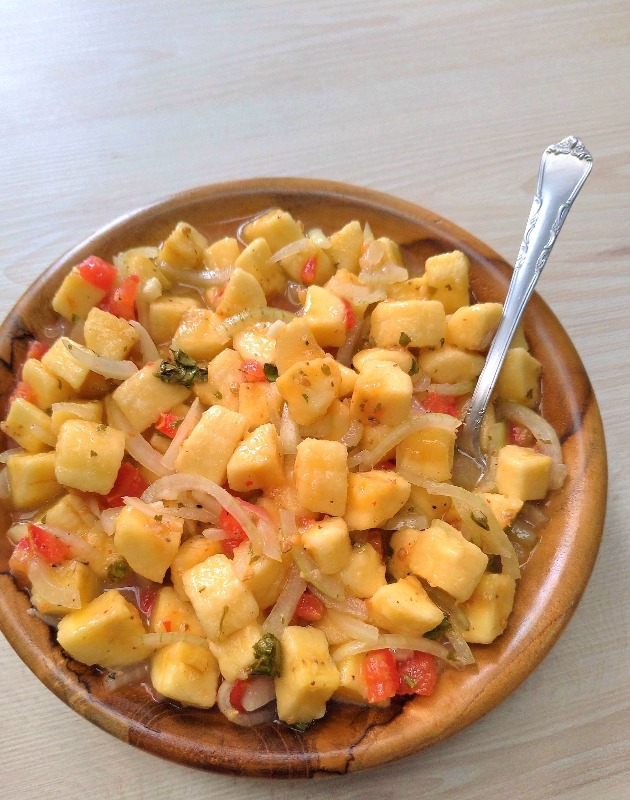

Vegan Banana Ceviche

The banana ceviche is a great vegan option for you to eat on hot sunny days.
Ingredients
- sicilian lemon
- lime orange
- sweet potatoes
- purple onion
- plantain
- tomatoes
- pepper
- salt
- olive oil
Preparing way
Making a ceviche is not a hard work. You'll only need to slice everything whichever way you prefer and follow the steps.
- After you slice everything, put the Banana and the onion in a pot with salt.
- make a juice with 1 lemon and hald orange. Put it in the pot. Store in the fridge for 10 minutes.
- slice the potetoes and put to bake in the oven at 180°C
- after the 10 min, put the tomatoes, pepper and olive oil.
This recipe is great to eat with guacamole too.